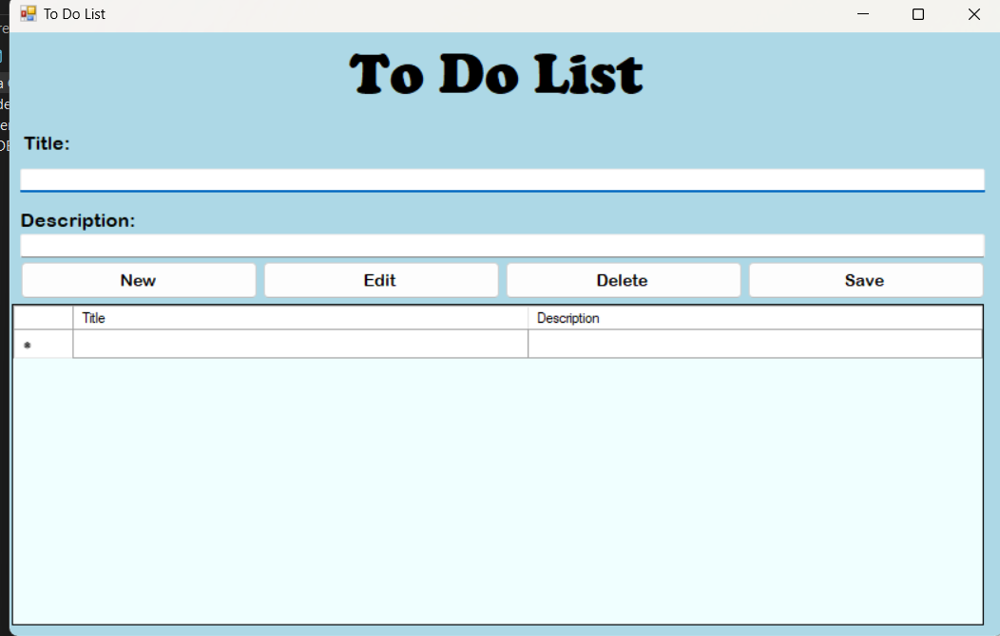

Hi, my name is Enadia Vreka,im a begginer in programming but with a lot of passion to learn.Here you can explore my work and my experience!
Hi, my name is Enadia Vreka,im a begginer in programming but with a lot of passion to learn. With the help of mt teachers i am learning more and more everyday.Currently i am focusing on front-end development and building interactive user interfaces.
I addition to web development, i enjoy learning about the latest trend in technology, and exploring new programming languages. I am excited to continue expanding my skills set and contribute to meaningul projects!
These are the projects i have currently completed. The first one in a to do list app, build with C# and Windows Forms. Wheras the other one is an online library build with HTML and CSS.You can explore the code that i have created for this project:
This is my first project, it's a simple to do list app where you can add,modify or delete the tasks that you need to do throught the day.
This is my second project, it's a simple website page about an online library,there are a couple books which users can read.
University of Kolegji Universitar Beder,2024
In this blog, i want to share how i created my first personal portofolio.
Building a personal portfolio is a great way to showcase your skills, projects, and experience to potential employers or clients. Here’s a simple breakdown of how I created mine:
Planning the Portfolio
The first step was to decide what my portfolio would include:
Writing the HTML Code
I then built the structure for each page using HTML:
Styling with CSS
Using CSS, I made sure the site was responsive (looked good on mobile and desktop).
Conclusion
Creating a personal portfolio is a great way to showcase your work and make a strong impression. By following these simple steps, you can create a professional portfolio that highlights your skills and projects, helping you stand out in the tech world.This version is shorter, more straightforward, and easy to follow while still covering the key points.